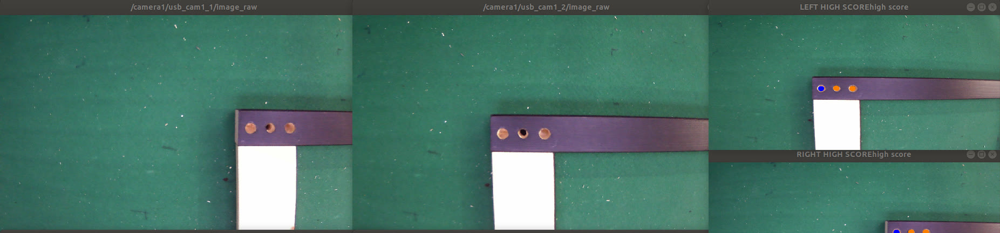

Lab project · AIRO Lab · 2020
Item Assembly: finding screw holes with a stereo camera
Vision for a furniture-assembly robot. The pipeline found screw holes in two camera images and turned them into a 3D pose that the arm could use to insert a screw.
- Role
- Vision researcher (undergraduate)
- Program
- Item Assembly AI Robot Challenge, government-funded, multi-lab
- Lab
- AIRO Lab, Prof. Min-Sung Kang
- Stack
- C++, ROS, YOLOv5, Basler cameras

The problem
The challenge asked teams to automate furniture assembly with a robot arm. Before the arm could drive a screw, it needed the position and direction of each hole in its own frame.
Screw holes are small and low in contrast, and a panel has several of them in a fixed layout. That layout is useful: a set of detections that does not fit it is probably wrong.
The pipeline
- 1 Detect A YOLOv5 model trained on hole images found candidates in each camera frame.
- 2 Match pattern Every combination of detected circles was checked against the known hole layout, which dropped false hits.
- 3 Triangulate Matched holes in the left and right images became 3D points, using the calibrated intrinsics, baseline and camera angle.
- 4 Publish The hole pose went to the arm as a TF frame through ROS services, and was projected back to pixels to check alignment.
The two cameras were angled toward each other rather than mounted in parallel, so the triangulation includes the camera angle instead of using the parallel-stereo disparity formula.
dist and the camera angle give the point in the camera frame.How it ran
The pipeline ran as three ROS services.
camera_serverCaptured frames from the two Basler cameras.hole_find_serverRan detection, pattern matching and triangulation, and returned the hole pose.update_tfPublished the hole pose as a TF frame.My part
On the AIRO Lab team I owned the vision part: finding the screw holes for assembly and locating them in 3D with stereo vision. The pipeline on this page, from camera calibration to the pose sent to the arm, is that work.
News article on the challenge (Korean)